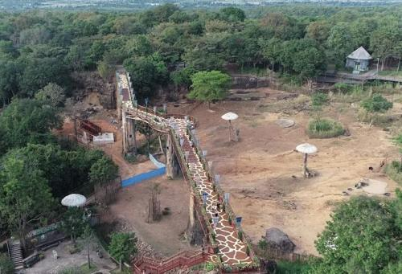
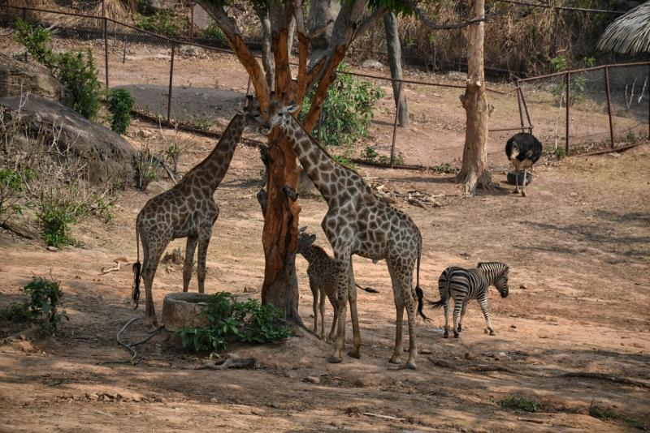
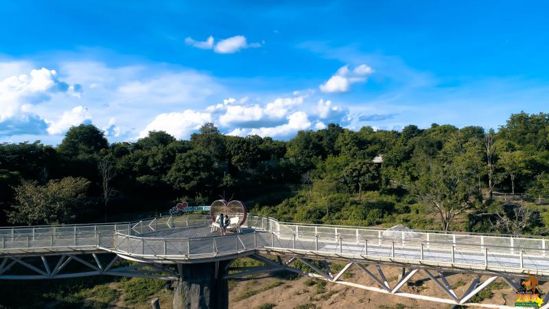

Sky Walk - สะพานเดินชมสัตว์ สวนสัตว์ขอนแก่น
สะพานเดินชมสัตว์ (Sky Walk) เป็นอีกหนึ่งจุดเด่นของสวนสัตว์ขอนแก่น ที่เปิดโอกาสให้นักท่องเที่ยวได้สัมผัสกับบรรยากาศธรรมชาติจากมุมสูง
จุดเด่นของ Sky Walk
- มีความยาวประมาณ 100 เมตร
- สูงจากพื้นดินประมาณ 15 เมตร
- สามารถชมวิวทิวทัศน์ของพื้นที่โดยรอบ ได้แก่:
- อำเภอเขาสวนกวาง
- อำเภอน้ำพอง
- เขื่อนอุบลรัตน์
สัตว์ที่สามารถพบเห็นได้จาก Sky Walk
ด้านล่างของสะพานเดินชมสัตว์ นักท่องเที่ยวสามารถมองเห็นสัตว์ป่าอันน่าตื่นตาตื่นใจ เช่น
- ม้าลาย
- ยีราฟ
- นกกระจอกเทศ
นักท่องเที่ยวสามารถเดินเล่นบนสะพาน Sky Walk เพื่อสัมผัสประสบการณ์การชมสัตว์ในมุมมองที่แตกต่าง และดื่มด่ำกับธรรมชาติอันสวยงามของสวนสัตว์ขอนแก่นได้อย่างเต็มที่


